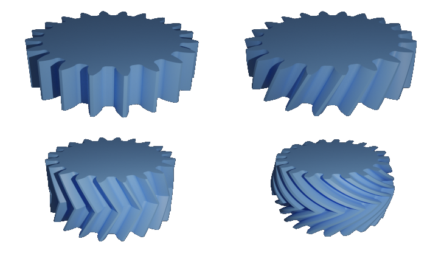

f-rep Gears

I’ve been writing for blogs since 2009 and I always wanted to write about gears. Finally the time has come.
I can hear a voice among the crowd: If took you so long, better be something like a differential helix angle, differential tip diameter herringbone gear.
Ah, you guys mean a liberato gear?
Joking apart, I was just blown away with how easy it is to apply transformations to f-rep models and end up with cool strange geometries.
I will elaborate a bit more how I got to the gear you can see in the image above and in the process I’ll try to show how I modeled simple gears, like spur and helical gears.
The Idea
The way I designed the gear here is kind of unusual, so I think it needs a bit of explanation.
A F-rep model can be created using implicit equations in libfive. So I thought to myself it would be nice to have an implicit equation of an involute to start with. The problem is that the involute curve is usually represented as a parametric equation.
The interesting “discovery” was that it is indeed possible to have an implicit equation of an involute, the derivation of the equation is easy but not obvious. Even more interesting to me is that I found the solution in a book from 1865.
Price, B (1865). A Treatise on Infinitesimal Calculus, Volume II: Integral Calculus, Calculus of Variations, and Differential Equations. 2nd ed. Oxford at the Clarendon Press.
Let’s take a look at the full script to generate the gear you can see in the opening image of the post and after that I’ll break down the important parts.
SOME IMPORTANT NOTES:
-
I’m not following some LISP conventions: global variables should be named in between asteriscs (like a did with z, number of teeth for us mechanics, an axis for matemathicians), and you should use them wisely. I’m not following this conventions because I see this as a short script, not a long code for a library. I think it is more readable like this and I like to have the parameters I’ll probably change on top of the script. Just a side note, I like how lisp doesn’t force you to some rules, just states conventions.
-
I personally don’t like so much short, one or two characters, variables names. Again, I’m coding this way because I feel it’s a bit more readable in the sense it follows the notation of mechanics. I recommend the tec-science website as a more detailed source of info on gear calculations. I tried to follow more or less the naming of variables that they use.
-
I’m not adding profile shift.
-
I’m not claiming cool looking gears are better than traditional gears.
(define module 1)
(define *z* 20) ; number of teeth
(define pa (/ pi 12)) ; pressure angle in radians
(define thickness 10) ; gear thickness, mm
(define d0 (* module *z*)) ; reference pitch circle diameter
(define db (* d0 (cos pa))) ; base circle diameter
(define da (* module (+ *z* 2))) ; addendum circle diameter
(define rb (/ db 2)) ; base circle radius
(define ra (/ da 2)) ; addendum circle radius
(define alpha2 (/ pi *z*)) ; tooth angular distance in radians
(define eb2 (* (/ module 4) pi (cos pa))) ; tooth width spacing
(define clea (* (/ 5 32) module)) ; dedendum clearance
(define dd (- (* module (- *z* 2)) (* 2 clea))) ; root diameter
(define-shape (involute x y z)
(+ (* x (cos (* (/ 1 rb) (sqrt (+ (* x x) (* y y) (- (* rb rb)))))))
(* y (sin (* (/ 1 rb) (sqrt (+ (* x x) (* y y) (- (* rb rb)))))))
(- rb)))
(define right-contour
(rotate-z
(difference
(inverse involute)
(-(lambda-shape (x y z) (- rb x)))
(rotate-z
(lambda-shape (x y z) (- y))
(/ alpha2 2)))
(- (/ alpha2 2))))
(define left-contour
(reflect-y right-contour))
(define tooth
(union right-contour left-contour))
(define spur-gear
(difference
(union
(array-polar tooth *z*)
(circle rb)
(array-polar (circle eb2 [rb 0]) *z*))
(inverse (circle ra))
(array-polar
(rotate-z
(rounded-rectangle [(/ dd 2 ) (- eb2)] [ra eb2] (/ module 2))
alpha2)
*z*)))
(define lower-side
(remap-shape ((extrude spur-gear (- (/ thickness 2)) 0) x y z)
(+ (* (cos (/ z 7)) x) (* (sin (/ z 5)) y))
(- (* (cos (/ z 7)) y) (* (sin (/ z 5)) x))
z))
(define liberato-gear
(union
lower-side
(reflect-z
lower-side)))
liberato-gear
(set-quality! 11)
(set-resolution! 20)
(set-bounds! [-20 -20 -6] [20 20 6])
As you can see the complicated part is to generate a tooth profile. After you achieve that, you go to town.
The trick to create the involute profile resides in defining a shape using the implicit involute equation. In libfive equations can create shapes within the bounds set in the end of the script.
(define-shape (involute x y z)
(+ (* x (cos (* (/ 1 rb) (sqrt (+ (* x x) (* y y) (- (* rb rb)))))))
(* y (sin (* (/ 1 rb) (sqrt (+ (* x x) (* y y) (- (* rb rb)))))))
(- rb)))
Once we have the involute shape, the idea is to trim away everything that’s not relevant to define one side of the tooth. After that the shape is rotated back so it sits along the x axis, making it easier to reflect the half shape and end up with a involute gear tooth.
(define right-contour
(rotate-z
(difference
(inverse involute)
(-(lambda-shape (x y z) (- rb x)))
(rotate-z
(lambda-shape (x y z) (- y))
(/ alpha2 2)))
(- (/ alpha2 2))))
(define left-contour
(reflect-y right-contour))
(define tooth
(union right-contour left-contour))
Here is a close up on the profile generated, 20º degrees pressure angle (pi/9 in radians), approx 15.6 % (5/32) of module added to the dedendum as clearance. There’s a module/2 sized fillet on the root, just to break the sharp corners.
The last image is just to showcase some gears that are easily generated having the spur-gear modeled. To have the helical gear you simply apply the remap-shape method. For a herringbone gear you just reflect the helical gear and bob is your uncle. These models were rendered in blender.

Upper left: spur gear Upper right: helical gear Lower left: herringbone gear Lower right: differential helix angle gear
Hope you found this as interesting as I did !
Cheers!